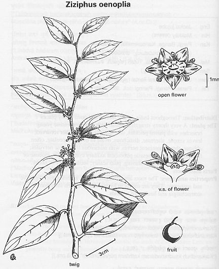

Zizypus
oenoplia Mill.
Taxonomic Details

----- Correct Name
----- Classification
----- Synonyms
----- Common Names
Other Biological Details
----- Habit and Habitat
----- Diagnostic Features
----- Reproductive Biology
---------- Breeding System
---------- Phenology
---------- Pollinators
---------- Seed Biology
----------Seed germination
------ Cultivation
----- Major Pests and Diseases
Economic Potential and Uses
----- Parts Used
----- Uses
----- Harvesting Practices
----- Produce and Products
----- Chemistry
----- Processing Techniques
----- Other uses
----- Economic Potential to the
Country
----- Export Potential
Miscellaneous Information
Literature
Taxonomic
Details
Correct Name : Zizypus oenoplia Mill.
Family :
Rhamnaceae
Synonyms : :
Rhamnus oenoplia L.
Common Names :
English: Jackal Jujube
Sanskrit: Srigalakoli, Bahukantaka, Karkhandu, Dusparsa, Madhura
Hindi: Makal: Makai,
Izhanthai.,
Bengali: Siakul, Mahkua Jhurkal, Jangalkul
Malayalam:Kottavalli, Tutalimiillu
Tamil: Ambulam, Suraimullii, Suraiyilandai, Soorai,
Soorai mullu.
Telugu:Banka, Paragi,Parlngi, Paraki
Kannada: Barige, Challe, Hurasurah, Karisurimullu
Misc:MAR.-Kanerballi, Makor
Oriya: Barokoli,Konta Koli
Back to Top
Other
Biological Details
HABIT & HABITAT:
A straggling shrub, often semi-scandent
by its profound throughout the hotter parts of India. Ceylon Tropical Asia and
Australlia.
Availability :
Distribution :
Habitat: Bushes & Shrubs, Coastal areas, Common in deciduous forest, Dry forests,
dry localities, dry mixed forests, Dry Open areas, Dry tropical forests, Field
hedges, forest edges, Hill forests, Hilly tracts,moist deciduous forest, Open
bushy places, Open forest, Plains, Scrub forests, Scrub jungles, Thickets and
waste lands.
BioticZone: Himalaya, Konkan plain, Peninsular India, Tropics, West Coast and
Western Ghats.
Misc: Akeri, Akot, Alibag fort, Anantpur Forest, Atru, Attikunte, Attur,
Badami-Ananthpur, Baghnadi, Bardez, Begur, Belachi, Betim, Bicholim, Fort area,
Bordabri, Brahmanachi, Budbhum, Budsari hilly area, Near Margao, Bugganipalli,
Burdwan, Butpal-Ordofond, Caranzol, Chelama, Chikhalwal, Chopra, Corbett National Park,
Deogad, Devarayanadurga, Diguvametta, Digwal, Durg R.F., Ghotge, Janekal State Forest, Jogimatti (State
Forest), Kadaval, Kaisuva fort, Kalanaddi, Kanjighat, Kanjirakadavu, Nilambur,
Karakanalli Reserve Forest, Karanja, Karjat, Kasdol, Khanale, Lotia-Jhir,
Mahaballeshwar, Mahanandi, Mallampalli State Forest, Managaon, Mapuca,
Marrikunta, Mhasla, Moluccas, Morkhal, Nagarahole, Nandagaon, Nanora, Naradave,
Naringre, Nedumkayam, Nilambur,
Pandargere Forest Plantation, Pat-Netraveli, Pernem, Raiyi village, Ramayampet,
Regional Research Station, Brahmavar, Regunvara, Roha, Salkumar, Satyakalli,
Sawantwadi, Shahabad, Shembagadevi, Singhari, Sitanadi, Sukhalahatti, Tanem,
Taurenga, Terecol,
Tirthrampura State Forest,Tolpetty, Ujjini State Forest, Valpoi area,
Vishnsunandi,
Walayar forest and Yelwal.
Country: Asia, Australia, Burma, Ceylon, India, Malacca, Sri Lanka and Tropical
Countries.
Zone: Central, East, North, North East, North West, South and West zone.
State: Andhra Pradesh, Arunachal Pradesh, Assam, Bihar, Goa Daman Diu, Himachal
Pradesh, Karnataka, Kerala, Madhya Pradesh, Maharashtra, Punjab, Rajasthan, Tamil
Nadu and West Bengal.
District: 24 Pargana, Akola, Balaghat, Bangalore, Bankura, Bastar, Belgaum,
Bellary,
Bhopal, Bidar, Bijapur, Cannanore, Champaran, Chikmaglore, Chitradurga, Dadra,
Dakshin Kanndaannada, Damoh, Dharmapuri, Dharwad, Durg, Gwalior, Hassan, Hoogli,
Hoshangabad, Howrah, Jhalawar, Kameng, Kodagu, Kolar, Kota, Kurnool, Malappuram,
Maldah, Medak, Murshidabad, Mysore, Palaghat, Palani, Panna, Purulia, Raigad,
Raigarh, Raipur, Rajnandgaon, Rewa, Sagar, Salem, Satara, Satna, Seoni, Shahdol,S
himoga, Shivpuri, Sidhi, Simla, Sindhudurg, South Arcot, Surguja, Tikamgarh,
Tiruchi, Tirunelveli, Tumkur, Una and Yawatmal.
Talluk: Badami, Chintamanis, Kudal, Pachmarhi, Sawantwadi and Tenkasi,
Latitude: 0,18,74,
Longitude: 0,21,73,
Alitude Minimum: 0,100,250,800,900,
Altitude Maximum: 0,500,800,810,1200,
Temperature Minimum: 0,21,
Temperature Maximum: 0,32,
Rainfall Maximum: 0,2070,
Rainfall Minimum: 0,2080,3500
Status :
Back to Top
DIAGNOSTIC FEATURES
Brairusty-pubescent; prickles paired: one straight, the recurved; leaves
distichous,
ovate to ovate-lance often oblique, acute, entire or crenate, glabrous for the
nerves, white or red-bluish beneath, 3.3-6.3-1.8-3.2 cm., three prominent nerves
with numerous transverse nervules; flowers green, in short 9 cymes; drupes globose
or obovoid, black, shining Flowers 12-20, in subsessile pubescent paniculate
cymes which are slightly longer than the petioles. Calyx hairy outside; lobes
ovate, acute, keeled to the middle or a little below it. Petals obovate,
cuneate,
shorter than the calyx lobes glabrous. Styles united almost to the apex. Drupe
edible, 6 mm. dia., globose or obovoid, 1 celled, black, shining; pulp scanty;
stone woody or bony.
Back to Top
REPRODUCTIVE BIOLOGY
Breeding System :
Phenology:
It flowers from April to July and the fruits'
during the winter.
Pollinators:
Seed Biology :
Seed Germination:
Cultivation:
Back to Top
MAJOR PESTS & DISEASES
Pests:
Diseases:
Back to Top
Economic
Potential and Uses
Parts used:
Whole
plant, Roots, Bark, Fruits.
Uses:
1.The fruits are edible and the bark is used for tan.
2.Aboriginal tribes Bhm Khzrias, Birhorns and the Santhals of Purulia distributed
in West Bengal use the roots in cases of hyperacidity in Ascaris infection.
3.Decoction of the bark is said to promote healing of the wounds.
4.The fruits
form constitituent of a medicine used by the Mundas for stofflache
5. Ethanolic extract of the
aerial parts of the plant exhibits hypotensive effect and also low diuretic
action
Harvesting
Practices
Produce and Products
Back to Top
Chemistry
Tannin content- 12%.
The stem bark obtained from Calcutta and in gated recently in West Germany contained
a numb(cyclopeptide alkaloids, viz. zizyphines (A-G) and ahnine A and B. Structures
of all these alkaloids been worked out.
The root bark contains two new cyclopelalkaloids alkaloids, zizyphine-A (C33H49O6N5) and zizyphine (zizyphinine,
C32H47O6N5). Betulinic acid, d-glucose,d-fructosc, sucrose and unidentified
polysaccharide are also present. Betulinic acid appears to be responsible for some of
the medicinal properties of the root bark.
Back to Top
Processing Techniques
Back to Top
Other Uses
1.-The prickly shrub is used for hedges and heap
fences.
2. The plant serves as a good host for the sandal tree.
Economical
Potential to the country
Back to Top
Export Potential
Back to Top
Miscellaneous
Information
The climber is troublesome in localities, particularly Madhya Pradesh, where if
almost impenetrable masses, hindering sylviculture operations. It is a strong
light-demander and in the density of the growing stock would tend to it down.
Control measures include: (i) cutting climber at a height of c. 30 cm. from the
ground and then admitting grazing; (ii) cutting it and burning; (iii) cutting
the climber, splitting the s and keeping the stump open by means of a sticstone;
(iv) cutting it, splitting the stump, and poison the exposed surface a solution
of quick lime sulphur.
Back to Top
Literature
1.Flora of Bangalore
District,Dr.S.V.Ramaswamy,Dr.B.A.Razi,Published by University of Mysore.PP.266.
2.gmr.landfood.unimelb.edu.au/Plantnames/Sorting/Ziziphus.html
3.Mhaskar.K.S,
Blatter.E. and Caius. J.F., Indian Medicinal
Plants, Vol 3, Pub: Sri Satguru Publications A Division of Indian Books Centre
Delhi, India. Pp-829-830.
4.Sasya Sahyadri- A CD
on Plants of Western Ghats, 2003, K.N. Ganeshaiah.
5.The Wealth of India-Raw Materials,
1978 Vol: IX, p 212;
6..www.chennaionline.com/health/allergy/pollenwatch24.asp
Back to Top